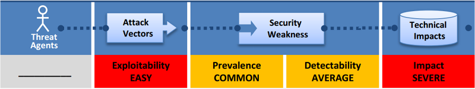
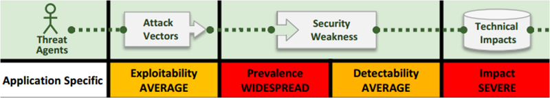
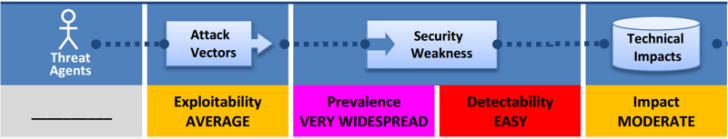
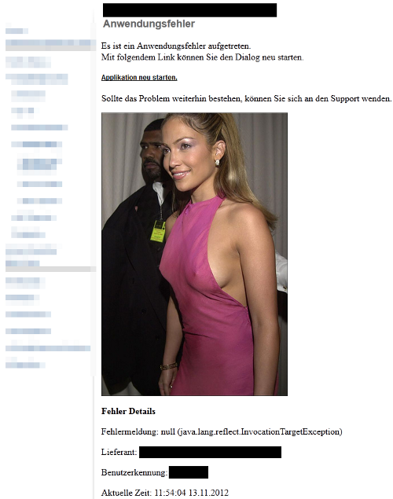
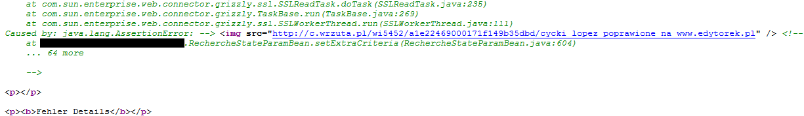
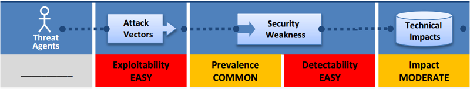
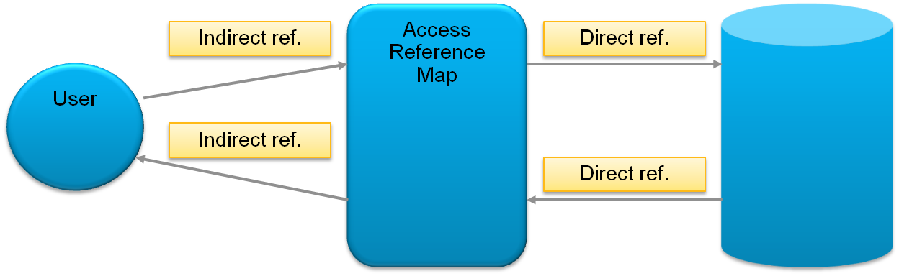
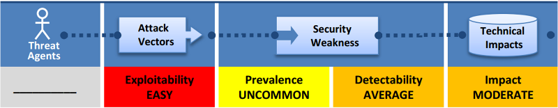
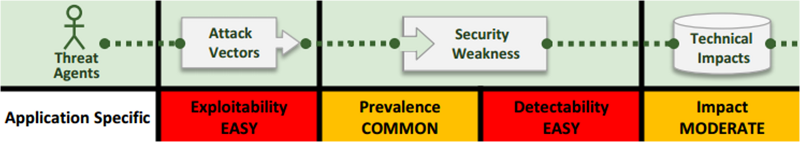
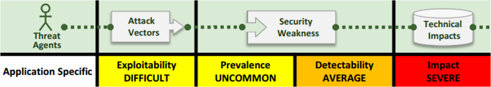

Web Application Security
Poznań, 2015-01-21
Who am I?
business architect @ Capgemini, 8 years automotive, security maniac
What is AppSec?
Application security (AppSec) is the use of software, hardware, and procedural methods to assure availability, confidentiality and consistency of the data processed, transmitted and stored by the application.
You can't see security
Yet still, security costs
Costs of failure are
HUGE
Be aware
of weaknesses and mitigation techniques (not today)
Table of contents
OWASP
OWASP Top 10 2013
Learning AppSec
| Mission: | improving web application security |
| Audience: | developers, managers, testers, consultants |
| Products: | tools, guides, standards, libraries, checklists, tutorials… |
OWASP Top 10 2013
- List of 10 most common security problems in web applications (NOTE: most common != most dangerous)
- New releases every 3 years (2004, 2007, 2010, 2013)
- DO: Use the list to quickly dive into AppSec
- DON’T: It’s not an auditing standard, pentest scenario or development checklist
Before we start one last bit of
Warning
Unauthorized pentest is a bad idea.
Be careful even when reporting security bugs.
http://prawo.vagla.pl/node/8154 http://niebezpiecznik.pl/post/glebokie-ukrycie-danych-w-pko-bp/ http://niebezpiecznik.pl/post/zatrzymala-go-policja-bo-zglosil-blad-na-stronie-urzedu-wojewodzkiego/
A1-Injection
When you let the user run HIS commands on YOUR server.
It's not only a web application issue.
Injection examples
Command injection
Runtime runtime = Runtime.getRuntime();
Process proc = runtime.exec("find . -name " + param);
SQL injection
Runtime runtime = Runtime.getRuntime();
Process proc = runtime.exec("find . -name " + param);
but there are also others (HQL, LDAP, XPath, XML, ...)
Be aware
Injection vulnerabilities occur by concatenating unvalidated user input with applications queries/commands.
SQL injection types
OR 1=1 (bypass the where conditions)
"select * from users where name = '" + user + "' and password = '" + password + "'"
// attack vector: user = sth' or '1'='1
// password = sth' or '1'='1
UNION SELECT (extract more data)
"select content from data where id = " + param
// attack vector: param = 21 union all select password from users
run additional commands
"select content from data where id = " + param
// attack vector: param = 1; DROP DATABASE records--
More prominent examples: http://codecurmudgeon.com/wp/sql-injection-hall-of-shame/
A2-Broken Authentication and Session Management
Everything around the protection of user credentials and session IDs.
Session management

Attacks on users session
A3-Cross-Site Scripting (XSS)
When you let the user program your web server.
XSS examples
XSS type 2, Reflected
URL: http://www.vulnerable.site/search.html?param=<script>alert(1);</script>
Servlet: out.writeln("Search: " + request.getParameter("param"));
XSS examples
XSS examples
Epic XSS fail: http://en.wikipedia.org/wiki/Samy_computer_worm
Other prominent fails: http://xssed.com/
Be aware
Dealing with XSS can be tricky. Be sure to sanitize your input depending on the context!
A4-Insecure Direct Object References
Problems creating a vulnerability if combined together:
- Insecure object reference (no access authorization checks performed)
- Direct object reference (the parameter is simple to guess)
Possible solution
Using OWASP ESAPI
http://www.ibank.com?file=my_excel.xls -> http://www.ibank.com?file=De4j5Ut98aWx
A7-Missing Function Level Access Control
By changing HTTP requests the user can access pages or trigger actions he is not authorized for.
The admin can access http://example.com/adminConf.jsp. Can I?
A5-Security Misconfiguration
Necessary hardening of application and any part of the application stack.
A6-Sensitive Data Exposure
Typically one of following problems:
- Insufficient SSL/TLS protection
- Weak password hashing methods
- Code weaknesses
- Sensitive data management issues
Fragments
Hit the next arrow...
... to step through ...
... a fragmented slide.
Fragment Styles
There's different types of fragments, like:
grow
shrink
roll-in
fade-out
current-visible
highlight-red
highlight-blue
Clever Quotes
These guys come in two forms, inline:
“The nice thing about standards is that there are so many to choose from”
and block:
“For years there has been a theory that millions of monkeys typing at random on millions of typewriters would reproduce the entire works of Shakespeare. The Internet has proven this theory to be untrue.”
Speaker View
There's a speaker view. It includes a timer, preview of the upcoming slide as well as your speaker notes.
Press the S key to try it out.
Export to PDF
Presentations can be exported to PDF, here's an example:
Take a Moment
Press B or . on your keyboard to pause the presentation. This is helpful when you're on stage and want to take distracting slides off the screen.
Much more
- Right-to-left support
- Extensive JavaScript API
- Auto-progression
- Parallax backgrounds
- Custom keyboard bindings